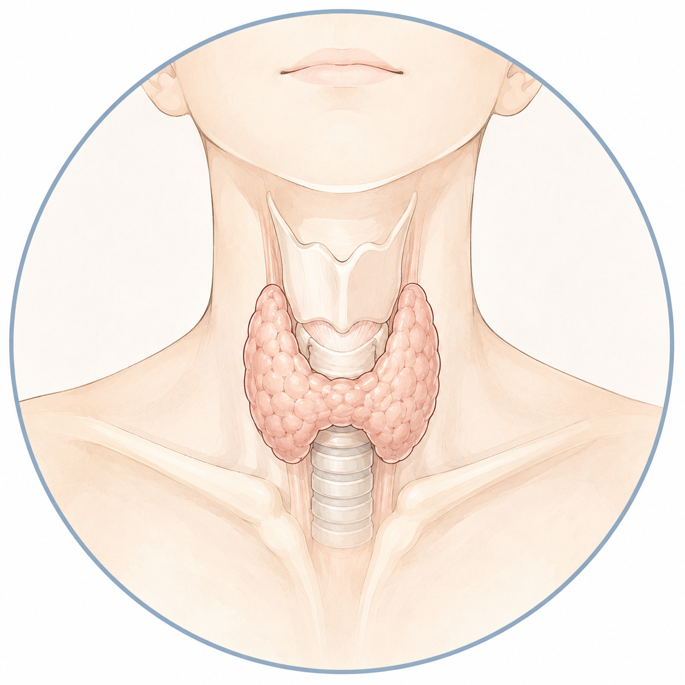

甲狀腺結節
常透過超音波觀察大小與影像特徵，再依風險討論追蹤或進一步檢查。

先認識甲狀腺
甲狀腺位在頸部前方，分泌的荷爾蒙參與身體能量運用與多種生理活動。當功能或結構出現變化，需要把症狀、抽血與影像放在一起理解。
同一個症狀不一定只對應一種疾病，也可能與其他健康因素有關。以下內容用來協助理解方向，不能取代實際診斷。
常透過超音波觀察大小與影像特徵，再依風險討論追蹤或進一步檢查。
可能伴隨心悸、手抖、怕熱或體重變化，仍需抽血確認與判斷原因。
疲倦、怕冷等感受並不具專一性，應結合甲狀腺功能數值進行評估。
不同類型的發炎與免疫變化，其症狀、病程及追蹤方式也可能不同。
評估與檢查
醫師會依實際狀況選擇需要的檢查，並非每個人都必須完成所有項目。
了解頸部變化、生活感受、用藥、家族史與過去的檢查紀錄。
依需要評估相關荷爾蒙與抗體，理解功能是否異常及可能原因。
觀察甲狀腺結構、結節大小與影像特徵，作為追蹤及後續判斷依據。
若有需要，再討論細針穿刺、核醫或其他檢查，而不是一開始就全部進行。
治療與追蹤
有些狀況需要定期觀察，有些需要藥物或其他治療。甲狀腺結節是否適合微創處置，也必須先完成診斷與個別評估。